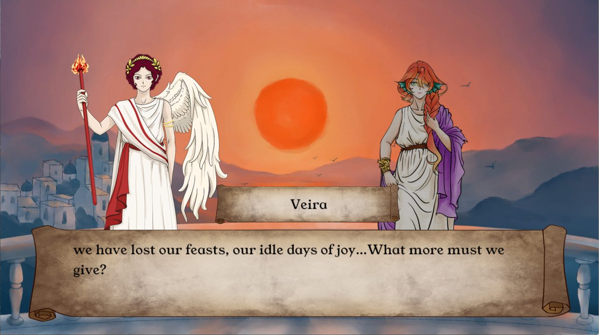

Advanced narrative course project
As the island sinks, the queen must choose between love and sacrifice.

Download the demoPlayable multi-ending prototype
Download from Baidu Netdisk (code: qud5)The island city-state of Veiko is about to be swallowed by the rising sea. King Auriona believes an oracle: a sacrifice will wake the sleeping island, and it will turn into a giant bird and fly into the sky. The player is Queen Veira, the kingdom's chief artisan: rational, without faith in the gods, deeply in love with the king, and always loyal and obedient, until the building of the altar stirs unrest among the people. Ordered to finish the last stage of the altar, the player moves the story forward through dialogue and choices, choosing between love and sacrifice and reaching different endings.
Themes: choices in the face of disaster, survival and sacrifice, love and betrayal, and concern for the environment.
Setting: an Aegean-style island city-state whose people have features of sea creatures. The island is really a sleeping giant whale, taken from the Chinese myth of the Kun fish turning into the Peng bird; the story as a whole also draws on the fable of Wei Sheng, who held onto a bridge pillar as the flood rose.